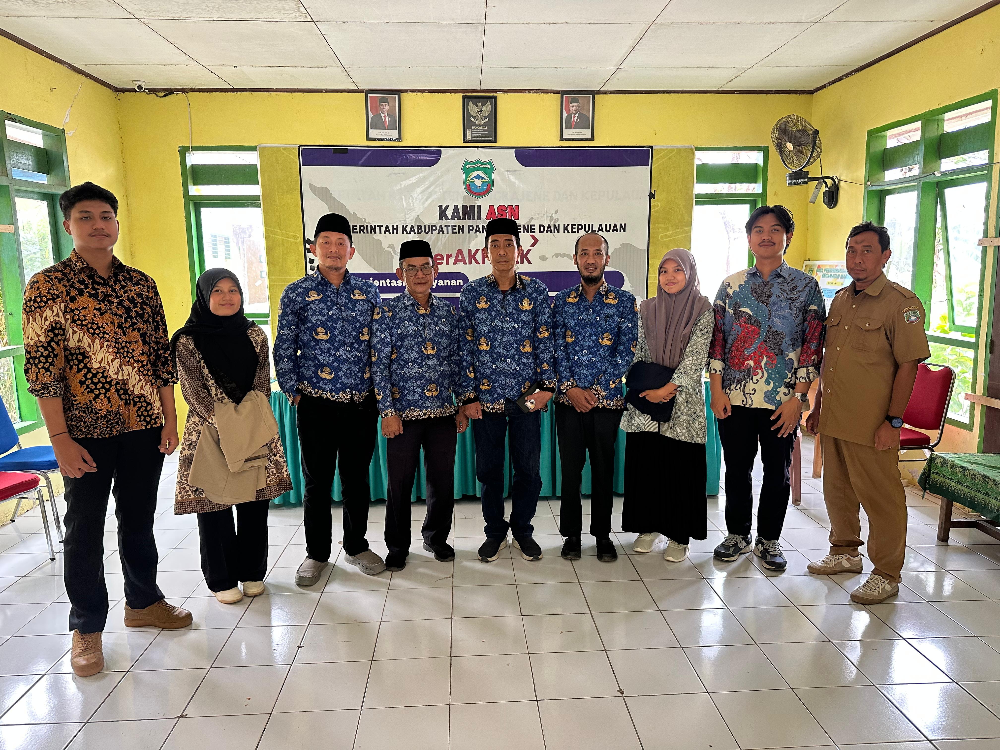
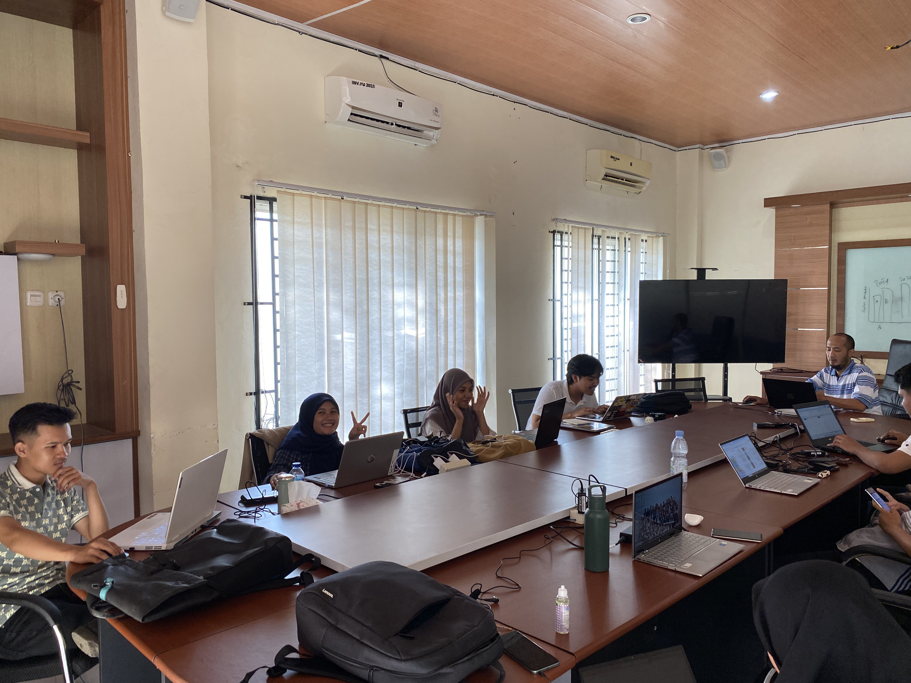
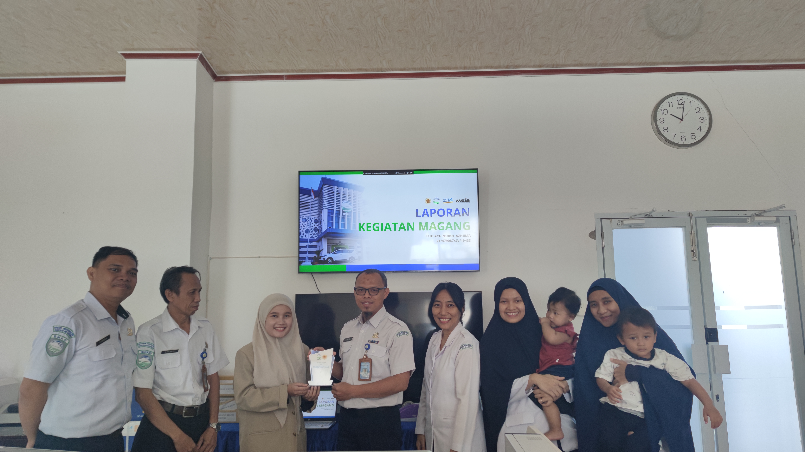
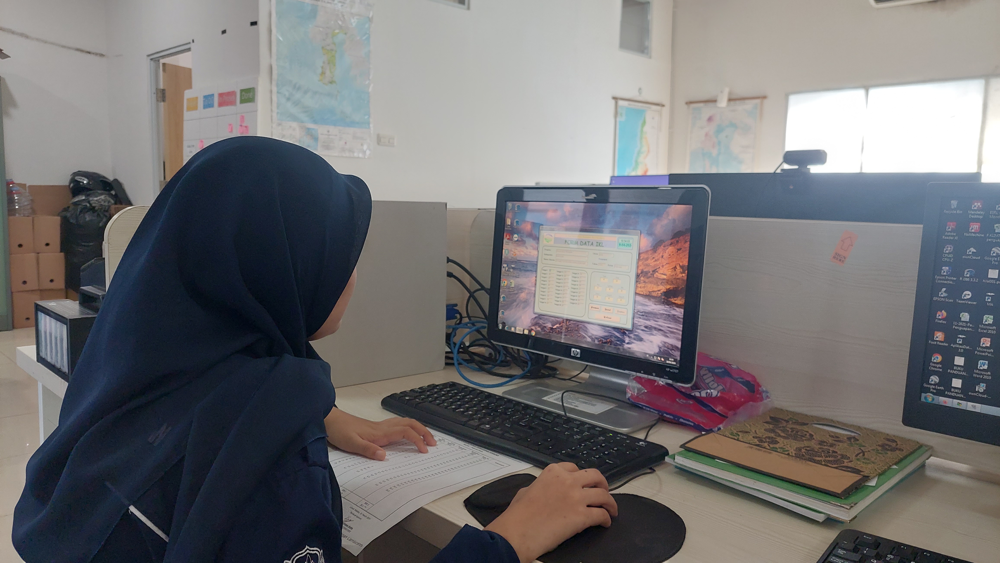
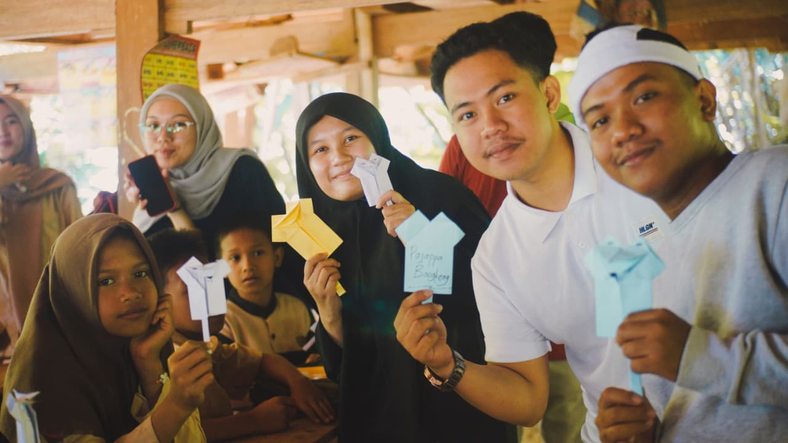
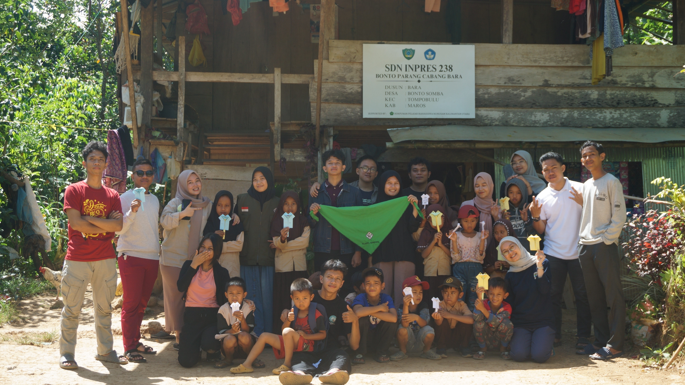
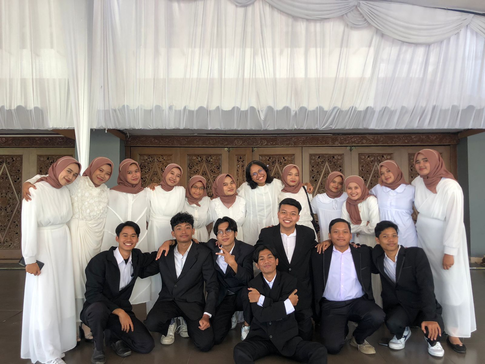
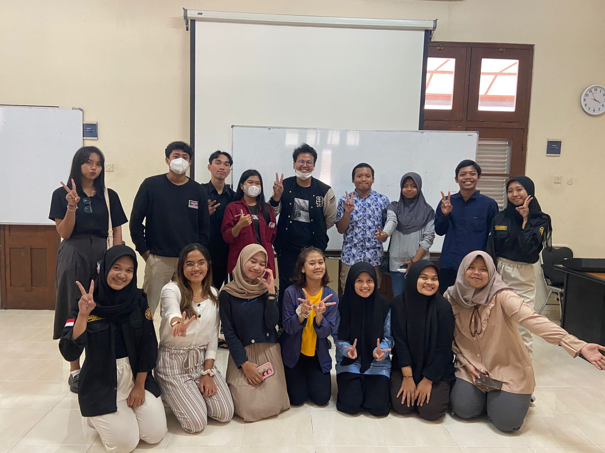

My Experience
Work
Sep - Dec 2024
Dinas Pekerjaan Umum dan Tata Ruang, Pangkep Region
Urban Planning Intern
Feb - June 2024
Balai Besar Meteorologi Klimatologi dan Geofisika Region IV, Makassar
Climatology Intern
Aug - Dec 2023
Universitas Gadjah Mada, Yogyakarta
Cartography Practicum Assistant
Jan 2023
Dinas Komunikasi Informatika dan Persandian Negara, Polewali Mandar
Statistik Intern




Organization/Community/UKM




Sep - Dec 2024
Pajappa Bangkeng
Education Volunteers
Feb - June 2024
Student Association of Remote Sensing and Geography Information System (STARGiS)
Research and Development Staff
Aug - Dec 2023
Research, Development and Innovation of Remote Sensing and Geographic Information System (RADARGiS)
Cartography Practicum Assistant
Aug - Dec 2023
UGM Vocational School Student Choir
Sopranino Singer